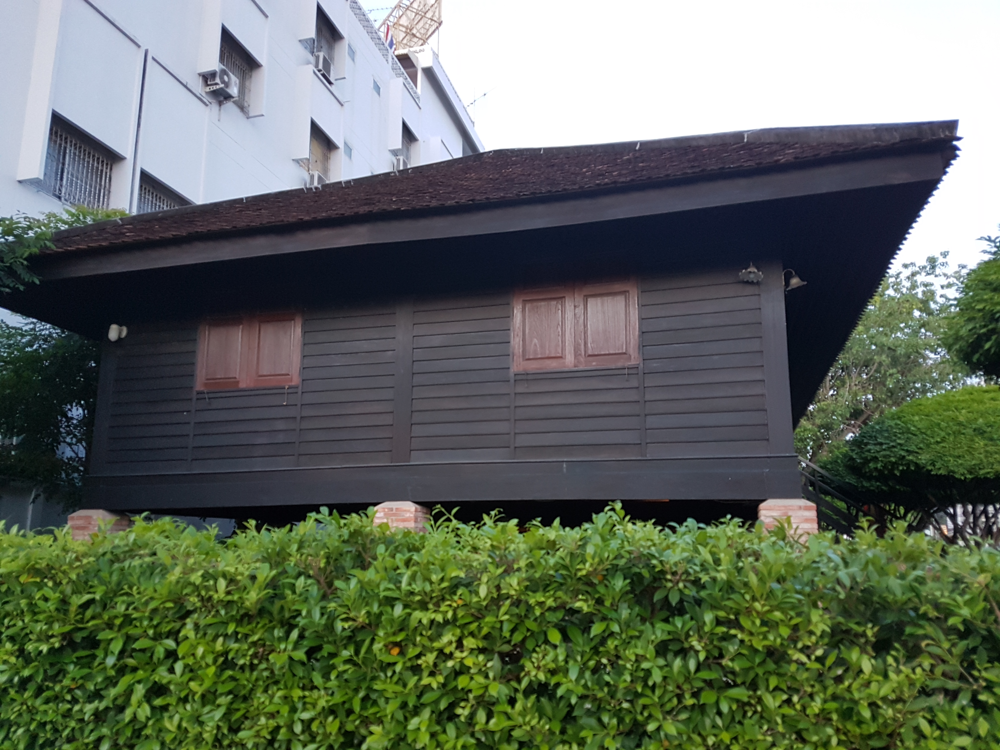

พิพิธภัณฑ์พธำมะรงค์
พิพิธภัณฑ์พธำมะรงค์
พิพิธภัณฑ์พธำมะรงค์จัดสร้างขึ้นโดยกรมราชทัณฑ์ เมื่อวันที่ 25 สิงหาคม 2530 เพื่อให้อนุชนรุ่นหลังได้รำลึกถึงตำแหน่งเก่าแก่ของกรมราชทัณฑ์ ในสมัยกรุงศรีอยุธยา คือตำแหน่งพธำมะรงค์ ในขณะเดียวกันก็เป็นการเชิดชูเกียรติวงศ์ตระกูล ‘ติณสูลานนท์’ เนื่องจากบิดาของพลเอกเปรม ติณสูลานนท์ คือรองอำมาตย์โทขุนวินิจทัณฑกรรม (ปึ้ง ติณสูลานนท์) ได้เคยดำรงตำแหน่งพธำมะรงค์ พิเศษเมืองสงขลา โดยได้จำลองรูปแบบบ้านพักเดิมของบิดาท่าน จากความทรงจำของพลเอกเปรม ติณสูลานนท์ ภายในพิพิธภัณฑ์มีการจัดแสดงข้าวของเครื่องใช้ของครอบครัวติณสูลานนท์ในอดีต เพื่อเป็นแหล่งเรียนรู้สำหรับอนุชนรุ่นหลังต่อไป มาที่นี่ต้องดู! เครื่องใช้ภายในบ้านตระกูลติณสูลานนท์ อายุกว่า 70 ปี อาทิ เตียงนอนจำลองสมัยที่พลเอกเปรม อาศัยอยู่ที่นี่ อาวุธประจำบ้านในอดีต และรูปถ่ายเก่าของตระกูล
